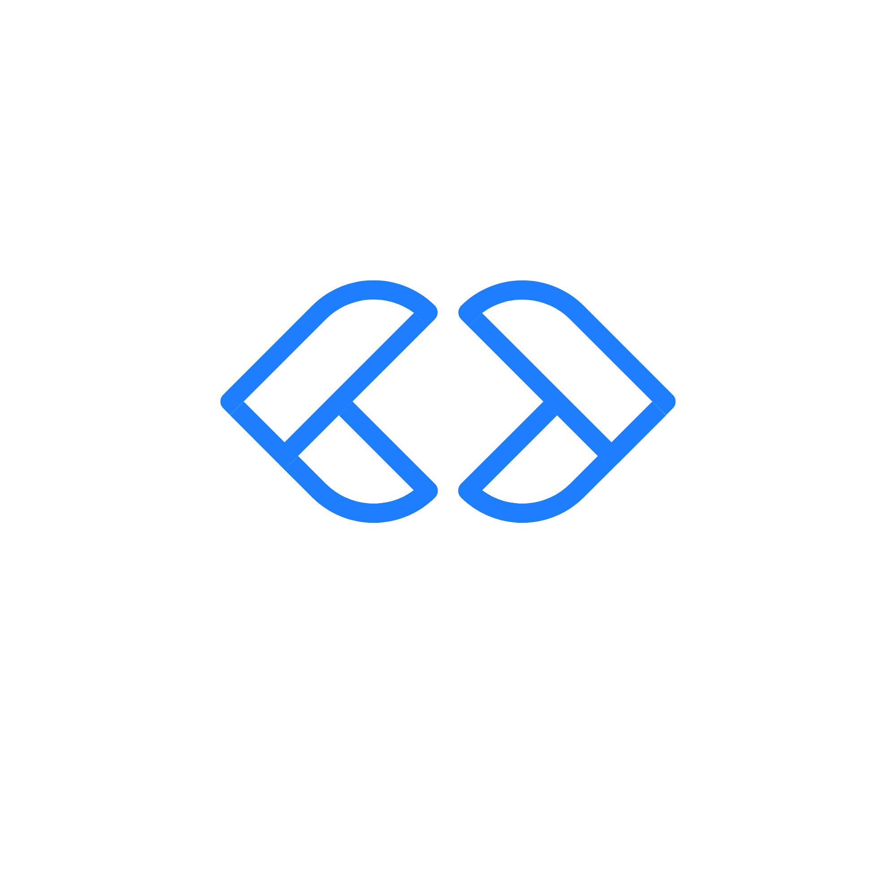

Group 11 Website
1st Lab Session
Problem 4.25 – 4x4 Word Grid Game
This project is a timed 4x4 word puzzle where users form valid three-letter words by navigating adjacent grid letters. Built with HTML, CSS, and JavaScript, it integrates real-time input, scoring, and dictionary validation.
Problem Statement
Approach to Solving the Problem
- Grid Setup : Generated a 4x4 grid with more frequent vowels.
- Word List : Loaded a JS dictionary of valid three-letter words.
- User Input : Replaced prompts with a responsive input field.
- Validation : Checked word existence, uniqueness, and grid path.
- Traversal Logic : Used backtracking to allow adjacent letter movement.
- Feedback : Displayed live results and updated scores instantly.
- Timer : Set a 3-minute countdown to end the game automatically.
- Summary : Showed final score and missed valid words.
Game UI
The first image displays the end screen of the 4x4 Word Grid Game, showing a "Game Over" modal with the final score and a list of words the player missed during the session.
The second image shows the start of the game with a 4x4 grid of randomly generated letters, a visible timer counting down from 3 minutes, and a score set to zero.
Group Gallery
too bad we didnt take group picture in the end ... ðŸ˜